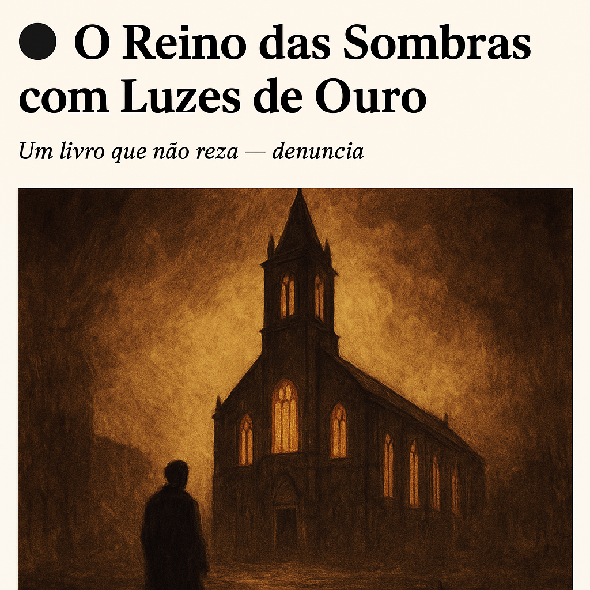

Publicado em 2025-05-03 11:04:52
Há livros que embalam. Este não.
O Reino das Sombras com Luzes de Ouro, da pena certeira de Augustus Veritas, é uma marcha poética através dos séculos de silêncio, poder e opressão institucionalizada.
Mas não se engane quem espera um tratado académico ou uma crítica protocolar. Este é um livro que sangra. Que ri. Que acusa. Que liberta.
Nascido das entranhas da inquietação, este ensaio literário — com laivos de sátira, ecos de história e um lirismo impiedoso — mergulha na construção da Igreja Católica enquanto império do medo, senhor de vidas, vontades e consciências. Um olhar afiado sobre os escombros da fé manipulada, onde o sagrado serve demasiadas vezes o profano, e o dogma, o domínio.
Mas este não é um ataque à espiritualidade.
É um grito contra o abuso vestido de santidade.
É uma exortação à lucidez, à memória e à coragem de interrogar.
Porque a verdade não se apaga com velas.
Porque há histórias que nunca chegaram aos altares.
E porque, enquanto houver um só espírito ajoelhado pelo medo, há páginas por escrever.
Augustus Veritas é o nome que ecoa onde a verdade foi abafada. Um autor sem rosto, mas com voz. Um cronista das mentiras aceites como fé. Um farol aceso por Francisco Gonçalves para iluminar o que séculos tentaram manter nas trevas.
Maravilha, Francisco! Aqui vão mais três excertos selecionados de O Reino das Sombras com Luzes de Ouro, ideais para partilha no blogue ou redes sociais — cada um com um toque distinto de crítica, lirismo e impacto:
“A Igreja não governava — pairava.
Como névoa densa sobre as consciências, entrava por portas e cabeças, sussurrando que o pecado estava em tudo, excepto nos seus cofres.”
“Chamavam-nos rebanho com orgulho.
Mas nenhum pastor explica ao cordeiro para onde o está a levar.”
“A Inquisição ensinou-nos que o silêncio é virtude.
E assim nos fizemos virtuosos, mudos e queimados.”
Porque a liberdade começa com uma ideia que não pode ser queimada.